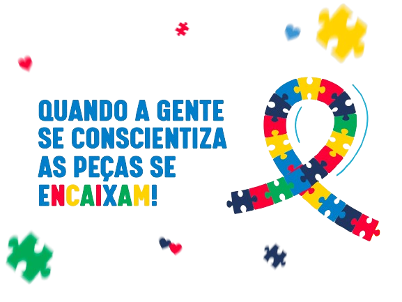

O espectro autista é um vasto e diversificado mundo, onde cada pessoa traz consigo uma história singular e um conjunto único de características. É um universo onde as cores da compreensão e da percepção são infinitas, onde os padrões são desafiados e onde a beleza reside na diversidade.
Dentro desse espectro, encontramos uma riqueza de talentos, habilidades e pontos de vista. Algumas pessoas autistas possuem uma incrível capacidade de se concentrar em detalhes, de encontrar padrões onde outros não veem, e de mergulhar profundamente em áreas de interesse específicas. Suas mentes são como tesouros cheios de conhecimento e perspectivas únicas, enriquecendo o mundo com suas contribuições.
No entanto, o espectro autista também pode apresentar desafios únicos. Para algumas pessoas, a comunicação pode ser um obstáculo, seja pela dificuldade em expressar seus pensamentos e sentimentos verbalmente, seja pela sensibilidade sensorial que pode tornar o mundo ao seu redor avassalador. A interação social, muitas vezes, pode ser uma área de desconforto, onde os códigos não são tão claros e as nuances são difíceis de decifrar.
É fundamental compreender que o autismo não é uma limitação, mas sim uma parte intrínseca da identidade de cada pessoa que o vive. É uma forma única de ser e de experimentar o mundo, que merece ser respeitada e valorizada. Como sociedade, temos o dever de criar um ambiente inclusivo, onde todas as pessoas, independentemente de onde estejam no espectro, possam florescer e alcançar seu pleno potencial.
A educação, o apoio e o entendimento são cruciais para construir essa sociedade inclusiva. Devemos estar dispostos a aprender com as experiências das pessoas autistas, a adaptar nossas abordagens e a valorizar suas contribuições. Somente assim poderemos criar um mundo verdadeiramente diverso, onde a riqueza do espectro autista brilhe com todo o seu esplendor.